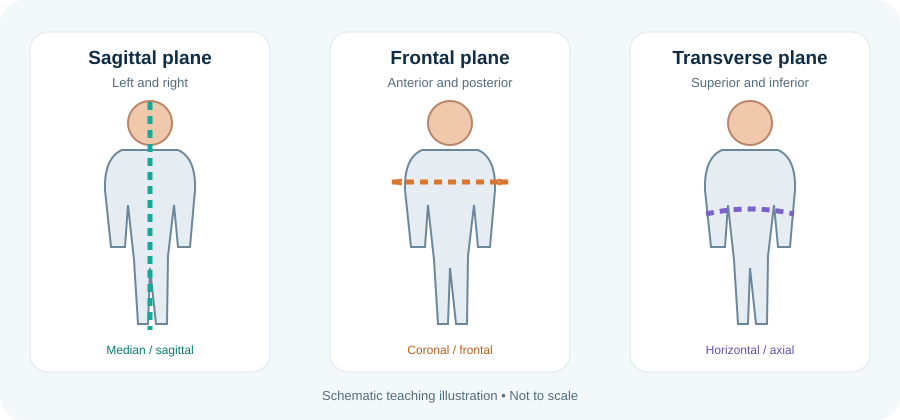

Anatomical language: eponyms, roots, abbreviations and nomenclature
Anatomical terms often combine roots, prefixes and suffixes derived from Latin or Greek. International anatomical nomenclature aims to give each structure a consistent descriptive name, reducing dependence on local usage and eponyms. Learning word parts makes unfamiliar terms easier to decode, but context matters: the same root can be used differently in anatomy, physiology and pathology.
Learning objectives
- Explain why standardised anatomical terminology reduces ambiguity.
- Interpret common word roots, prefixes, suffixes and abbreviations used in anatomy.
- Distinguish descriptive anatomical terms from eponyms.
- Use abbreviations cautiously and define them when context may be unclear.
High-yield study points
- Common directional roots include cranio- (head), caudo- (tail), antero- (front), postero- (back), medio- (middle), latero- (side), proximo- (near) and disto- (far).
- Common regional roots include cervic- (neck), thorac- (chest), abdomin- (abdomen), brachi- (arm), antebrachi- (forearm), femor- (thigh) and crur- (leg).
- -itis usually denotes inflammation; -ectomy denotes surgical removal; -otomy denotes cutting into; -ostomy denotes creation of an opening; these are medical word parts rather than anatomical directions.
- Eponyms such as 'Circle of Willis' remain common in teaching, but descriptive names may be clearer and can coexist with eponyms.
- Abbreviations are context-sensitive. Define them on first use in formal notes and avoid ambiguous abbreviations in clinical communication.
- Do not confuse anatomical nomenclature with diagnosis: a named structure identifies anatomy, while a clinical diagnosis requires evidence beyond the name.
- Use standard spellings and recognised synonyms when searching databases, atlases or research articles.
Clinical connection
Clear terminology is a patient-safety issue. When documenting anatomy or communicating across teams, use standard terms, define abbreviations and avoid ambiguous shorthand.
Check your understanding
- What does the prefix “hypo-” generally indicate?
Reveal answer
Below, under or deficient, depending on context.
- What does “bilateral” mean?
Reveal answer
Relating to both sides of the body or a paired structure.
- Why can eponyms be less informative than descriptive anatomical terms?
Reveal answer
An eponym may not communicate the structure's location or function; descriptive terms often provide that information directly.
Check your understanding: anatomical nomenclature
- Why should anatomical descriptions assume the standard anatomical position unless stated otherwise?
Answer and explanation
It gives a shared reference frame, so directional terms remain consistent regardless of the subject's actual posture.
- Does “left” mean the viewer's left when describing a patient?
Answer and explanation
No. It means the subject's anatomical left. This distinction is essential in imaging, surgery and clinical documentation.
- Why are standardised anatomical terms preferred over informal names?
Answer and explanation
Standard terms reduce ambiguity across disciplines and languages. Eponyms may be historically useful but should not replace precise anatomical terminology.
Further reading
Federative International Programme for Anatomical Terminology (FIPAT) for international anatomical terminology; compare with OpenStax Anatomy and Physiology 2e for introductory usage.
Orientation diagram: planes and reference directions

Why standard terminology matters
Standard anatomical terminology aims to make one structure or relationship identifiable without relying on local slang or a particular teacher's phrasing. A term should be specific enough to distinguish side, region, plane, structure and relationship. Where terminology varies between disciplines, define the intended meaning and use the accepted term consistently throughout an assignment.
Eponyms can remain common in clinical practice, but they do not always describe the structure or function and may have different names across countries. When an eponym is used, pair it with the standard anatomical term on first mention. Abbreviations should be expanded at first use and avoided where more than one interpretation is possible.
Further reading
Federative International Programme for Anatomical Terminology (FIPAT).